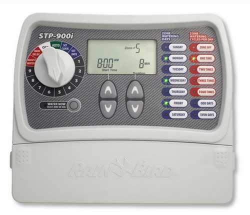
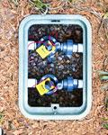
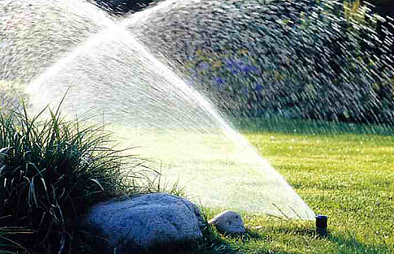
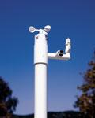

| Автоматичний полив Чернівці |
|
Стоять спекотні літні дні. Вже тиждень ні краплі води, повітря струмує і тремтить, усюди запашний аромат хвої та листя. Газон потьмянів і має жовтизну, а швидко відцвілі квіти безсило попадали по поверхні землі. Щоб врятувати рослини власник саду наймає робітника, який з ранку до вечора пересувається з довгим шлангом по всій ділянці. На ділянках зі складним ландшафтним дизайном складно попередити витоптування газону, поломку невеликих дерев і кущів, пошкодження клумб. Доводиться періодично запрошувати фахівця з ландшафтної фірми, щоб привести сад до ладу. А, якщо напір води в шлангу занадто малий, то і полити ділянку стає практично неможливо.
Системи зрошення (автоматичний полив) - це інженерно-технічний комплекс, що дозволяє виконувати полив ділянки більш якісно і професійно, ніж при ручному поливі. Конструкція системи автоматичного поливу передбачає найбільш оптимальний і точний об'єм поливної води, як для газону, так і для зелених насаджень за заданою програмою. Участь людини в роботі таких систем потрібна тільки для початкового програмування (зазвичай на початку кожного сезону).
Спеціально налаштована комп'ютерна програма робить автоматичний полив дуже розумним. Час поливу може регулюватися на кожній ділянці по-різному, в залежності від того, скільки вологи необхідно тій чи іншій рослині, наприклад, одна ділянка може зрошуватися 20 хвилин, а іншій потрібно 2 години. Також програму можна налаштувати на здійснення кількох поливів у день, або врахувати також і ручний полив, так як комп'ютер не враховує творчого підходу до процедури поливу. Ще один плюс роботи комп'ютера в роботі автоматичного поливу полягає в тому, що він забезпечений системою діагностики обладнання, яка здатна автоматично визначати помилки і несправності в роботі клапана і подавати сигнал тривоги.
Добре, що сучасні технологічні винаходи у сфері поливу добралися і до нас. Такий досконалий пристрій, як автоматичний полив, буде незамінним засобом грамотного поливу і довгі роки прослужить Вам, радуючи результатами своєї роботи.
Система автоматичного поливу для газонів складається з 4-х основних частин:
I Контролер (програматор)
- пристрій, що управляє. Мозок всієї системи, що подає сигнали електромагнітним клапанам. Контролер керує клапанами по черзі згідно Вашій програмі. При завершенні поливу однієї зони, він включає клапан наступної зони поливу і т.д.
II Електромагнітний клапан.
 Клапан регулює доступ води до зони поливу (модулю) з набором дощувачів. Ці зони розподіляються відповідно до наявних типами рослин, їх розташуванням, складністю конфігурації, площ.
III Дощувач
 - пристрій, змонтований, як правило, під землею. Починає працювати при певному тиску в системі труб. Під тиском води шток з форсункою висувається і починається полив. Висота підняття форсунки може досягати 30 см.
IV Погодна станція
 - пристрій, що відключає систему поливу в разі дощу, сильного вітру або низької температури. Частіше застосовується датчик дощу. Добре, що сучасні технологічні винаходи у сфері поливу добралися і до нас. Такий досконалий пристрій, як автоматичний полив, буде незамінним засобом грамотного поливу і довгі роки прослужить Вам, радуючи результатами своєї роботи. Фахівці нашої фірми допоможуть Вам спроектувати та влаштувати автоматичний полив у м. Чернівці та за його межами. Отож, завітайте до нас! Україна, м. Чернівці, вул. Фастівська 30 Б. +380509126841, +380970165646. |